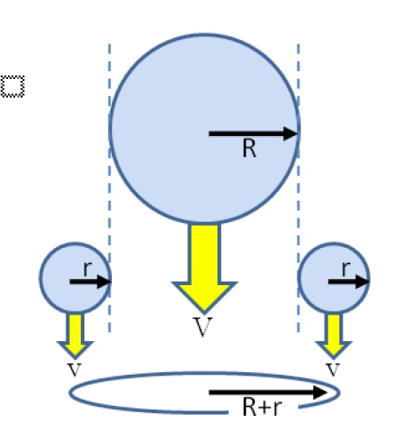
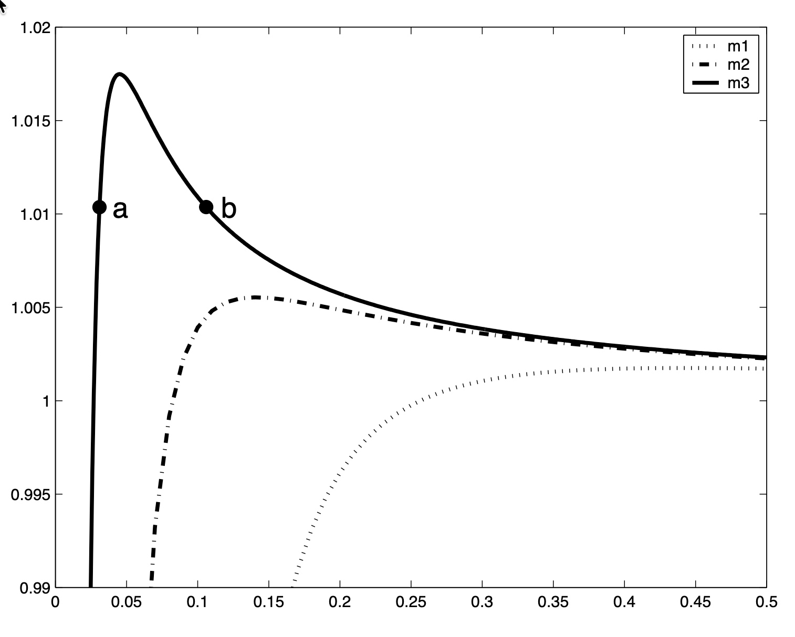
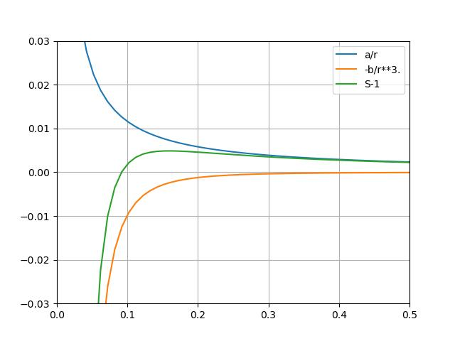

A405 final solutions#
Download a405_final_2026_solutions.ipynb
[1.] (12) Collision/Coalescence#
[a)] (5) Derive (42) with the help of a sketch, defining all the variables and stating all your assumptions.
The equation:
where V(r) \(\approx\) 0 and V(R) \(\approx\) JR (with J=6000 \(s^{-1}\), R in m)
{kind=link}

Fig. 8 Collison sweep-out from Thompkins Fig. 4.19#
The assumption is that a drop of radius \(R\) and mass \(M=\rho_l \frac{4}{3} \pi R^3\) is falling at speed \(V(R)\) through a concentration of droplets of radius \(r \leq R\) which fall at speed \(V(r)\). That means that in one second \(M\) will sweep out a cylinder of volume
where we have assumed \(r \ll R\) so that \(R +r \approx R\).
Inside that cylinder the droplets have a total liquid water concentration of \(r_l \left(\mathrm{kg}\,\mathrm{m}^{-3}\right)\). If the collection efficiency, \(E_c=1\), then all of this mass is added to the raindrop each second. In general \(E_c\) is different from 1 for various values of \(R\) and \(r\), because not every cloud droplet within the sweep out volume will
[b)] (4) Use to (42) find the total time required to grow a raindrop from a radius of 20 \(\mu \mathrm{m}\) to \(500 \mu \mathrm{~m}\), given a collection efficiency of 1 and stationary cloud droplets with \(r_l=0.3 g m^{-3}\).
We can either turn \(R\) into \(M\) and integrate (42) directly or get (42) in terms of radius:
then if \(E_c = 1\) and \(V(r) \approx 0\) (42) becomes:
and using \(V(R) = 6000\,R\):
import numpy as np
tau = (4.*1000)/(6000*0.3e-3)
the_time = tau*np.log(500/20)
print(f"{the_time/3600:.1f} hours to form precipitation")
2.0 hours to form precipitation
[c)] (3) In what sense is the time you calculated in the previous answer in conflict with observations of clouds that produce 0.5 mm raindrops? What is missing from (42) that could resolve that discrepancy?
Warm rain can take as little as 15 minutes once a cloud is formed. This is because large drops can collide with other large drops, in addition to small cloud droplets, accelerating rain intiation.
[2.] (12) CCNC#
A laser scattering probe measures a cumulative number distribution \(N(D)\) described by (43) and determines that it is given approximately by:
with \(N(D)\) in \(\mathrm{m}^{-3}\) and \(D\) in \(\mu \mathrm{m}\), for drops with diameters in the range \(1 \leq D \leq 20 \mu \mathrm{~m}\). Use this information to find:
Answer: First we need to convert the cumulative number distribution \(N(D)\) into the number density \(n(D)\) using (47) and equation 7 from the aerosol distribution notes
so \(n(D) = \frac{N_0}{2} D^{-3/2}\)
[a)] (4) The total droplet concentration \(N_T\) for drops in that size range.
Since \(N(D)\) is the number of drops with diameters larger than \(D\), the number of drops with diameters between 1 and 20 \(\mu m\) is given by subtracting the number larger than 20 from the number larger than 1:
\[ N_T=N(1)-N(20)=N_0\left(1-20^{-0.5}\right) = 0.78 N_0 \]
(1 - 20**(-0.5))
0.7763932022500211
[b)] (4) The mean diameter \(D\) for those drops
(20**0.5 - 1)
3.4721359549995796
c) The mass distribution \(m(D\)) with units of \(kg m^{-3} \mu m^{-1}\) (assuming pure water with density \(\rho_l\)
Answer:
[3.] (12) Gibbs free energy#
[a)] (6) Starting from (44) show that for a flat sheet of pure liquid water in equilibrium with vapor, \(g_v = g_l\)
Answer:
According to (44):
\[ d g \leq-\phi d T+\alpha d p \]where we are talking about the mixture of liquid and vapor and specifying that water is neither entering or leaving the system. If \(\mathrm{dT}=0\) and \(\mathrm{dp}=0\) then dg can only be negative or zero, so in equilibrium \(\mathrm{g}=\) constant. But we also know that : \(G=m_v g_v+m_l g_l\) and since neither \(g_v=h_v-T \phi_v\) and \(g_l=h_l-T \phi_l\) will change if T and p are constant, we’ve got:
\[ d G=0=g_v d m_v+g_l d m_l \]Next, since water is conserved we know that \(d m_v=-d m_l\), plug those in and we get \(g_l=g_v\)
[b)] (3) Consider another system at the same temperature in which the same amount of liquid is redistributed as droplets of radius \(0.1 \mu m\). Would this system have a lower or higher \(g_v\) in equilibrium? Why?
Answer: Since there is now a new component of surface energy due to the droplet surface tension, the energy of the liquid is higher, so the energy of the vapor will need to rise to keep up which produces a higher \(g_v\).
[c)] (3) How would the introduction of sulphate aerosols into each of these drops change the equilibrium value of \(g_v\) and \(g_l\) ?
Answer: Putting aerosols in the liquid reduces the number of liquid water molecules that can escape to vapor, which means that the vapor pressure in equilibrium can be lower, so \(g_v\) will be lower. \(g_l\) depends only on temperature, so that won’t change, but the total energy of the liquid per kg will be lower, since the drops will grow slightly and their surface energy per kg will be lower.
[4] (9) Koehler curve#
{kind=link}

Fig. 9 Koehler curve#
Koehler curve plots the equilibrium saturation \(S\) (yaxis) vs. the droplet radius \(r\ (\mu m)\) (xaxis) for three different aerosol masses.
[a)] (1) Which of the three aerosol masses \(m_1, m_2, m_3\) is largest? How do you know?
Answer: \(m_1\) is the largest, because it activates at the lowest \(S_{crit}\) and (45) indicates that \(S_{crit} \propto m^{-0.5}\). Physically, this is because the liquid in the largest aerosol gets the most protection from evaporation due to the Raoult effect.
[b)] (4) Give a physical explanation (i.e. argue in terms of the energies of vapor and liquid) why the equilibrium vapor pressure increases rapidly with radius near point a, and decreases with radius near point \(b\).
Answer: We can borrow some code from Worksheet9: Koehler Equilibrium solution and separate the Kelvin and Raoult terms to get the following figure

Fig. 10 Koehler curve individual terms#
As Koehler curve individual terms shows the \(-1/r^3\) term has the steepest slope and dominates the supersaturation for small \(r\), but rapidily goes to zero. This is because the Raoult term involves a constant aerosol mass divided by the drop volume, so the protective effect of the aerosol lowers the energy of the vapor by \(1/r^3\). The Kelvin term depends on surface energy per unit volume, which is \(r^2/r^3 = 1/r\) which changes much more slowly vs. radius.
[c)] (4) Suppose points a and b represented droplets in equilibrium with saturation \(\mathrm{S}=1.0012\), and the environmetnal saturation was increased to \(\mathrm{S}=1.015\). Describe what happens to the radius of droplet \(a\) and droplet \(b\), making reference to the appropriate equations from the equation sheet.
answer: For point a, the equilibrium radius will get slightly larger because the drop is an unactivated haze particle in stable equilibrium and has to remain on the Koehler Curve (45). For point b) the equilibrium is unstable, and the drop will grow by condensation since the saturation is greater than 1, driven by equation (46). The drop (r,S) point will no longer be on the Koehler curve.
{kind=link}
#
[5)] (12) Cooling#
Download the solution: final_exam_cool.ipynb
Use the tephigram labeled cooling problem to calculate the following:
For air at 700 hPa with 6 g/kg of vapor (saturated) and 1 g/kg of liquid.
(4) Find
The LCL of this air
The approximate temperature if it was brought adiabatically to a pressure of 1000 hPa.
(8) Suppose this air was cooled by 6 degrees C at a constant pressure of 700 hPa. Find:
The amount of liquid water condensed by the cooling (g/kg)
The new LCL, assuming no precipitation
The amount of energy \(\Delta q_{out}\) (J/kg) shed to the environment during the cooling.
Problem 5 answer#
[6)] (12) Mixing#
Download the solution: final_exam_mix.ipynb
Surface air at 1000 hPa with a temperature of 20 deg C and a dewpoint of 16 deg C is lifted adiabatically to 800 hPa, where it entrains 70% of environmental air that has a \(\theta_e\) of 307 K and a mixing ratio of 4 g/kg. Use the tephigram labeled ``mixing problem’’ to find:
The \(\theta_e\) and LCL of the of the surface air
The \(\theta_e\), \(r_v\) and \(r_l\) of the mixture
The LCL of the mixture
The temperature of the mixture at 800 hPa
Is the mixture negatively, positively, or neutrally buoyant with its surrounding environment? Explain.
Problem 6 answer#
Equations#
where \(b = \frac{i m M_w}{(4/3)M_s \pi\rho}\)